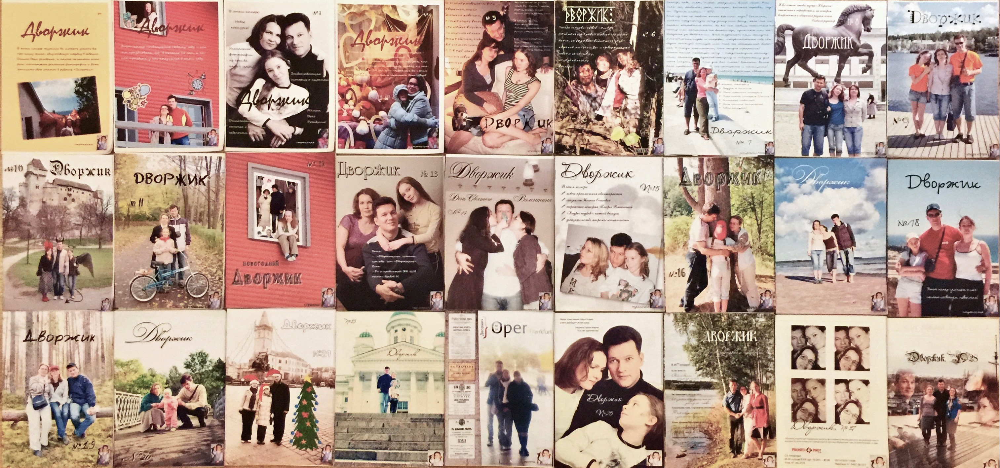

Журналы «Дворжик»
Семейный журнал выходил с 2007 по 2014 год. Главный редактор — Дарья Дворжицкая.

Классический «Дворжик»
Классический выпуск семейного журнала — номера 2007–2012 годов.
Смотреть выпускиСемейный журнал выходил с 2007 по 2014 год. Главный редактор — Дарья Дворжицкая.

Классический выпуск семейного журнала — номера 2007–2012 годов.
Смотреть выпуски